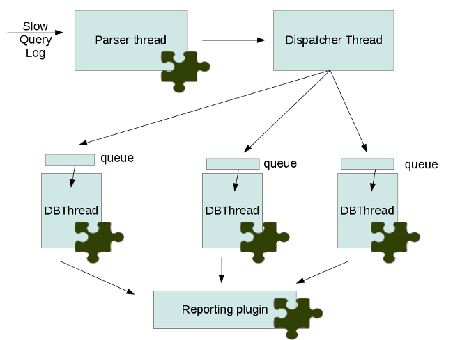

Playback is an open source tool designed for Percona internal use. It is provided as a courtesy to users and customers, however it is not supported under a Percona Support subscription. To get the best experience and results from Playback, users and customers are encouraged to work with the Percona Consulting team on project specific needs and requirements.
Playback is a tool for replaying the load of one database server to another. Currently it can read queries from MySQL query-log files and run them on other MySQL server. It has plugin architecture and can be extended with different plugins. Playback is an open source tool designed for Percona internal use. It is provided as a courtesy to users and customers, however it is not supported under a Percona Support subscription. To get the best experience and results from Playback, users and customers are encouraged to work with the Percona Consulting team on project specific needs and requirements.
There are following categories of plugins for percona-playback:
- input - responsible for where input data is given from,
- dispatcher - responsible for replaying the queries
- db - where queries should be played,
- report - how to represent results,
- other - plugins that doesn’t belong to the previous categories.
Each plugin can have own set of command line options which are usually provided with help messages.
At this moment the following plugins are implemented:
- input
- query_log - reads queries from query-log files
- dispatcher
- thread-per-connection - this plugin uses one thread per connection for replaying the queries.
- thread-pool - uses --thread-pool-threads-count to enable more queries per connection by utilizing the thread pool.
- db
- libmysqlclient - plays queries in MySQL server
- null - doesn’t play queries anywhere but useful for testing
- report
- simple_report - output information about executed queries in simple form
The engine’s architecture can be configured with the --dispatcher-plugin option. Each thread has queries queue. Input plugin parses input data and pass parsed queries to the engine. The engine pushes queries to the queue of certain db thread. The queue size can be limited with --queue-depth command line option. If the limit is reached the engine will stop input plugin thread until the size of the queue becomes less then the limit.
Input data can be played several times in a row. The number of repeats can be set with –loop command line options (NYI).
Before installing, you might want to read the Playback release notes.
Ready-to-use binaries are available from the Playback download page, including:
- RPM packages for RHEL 5 and RHEL 6 (including compatible distributions such as CentOS and Oracle Enterprise Linux)
- Debian packages for Debian and Ubuntu
- Generic .tar.gz binary packages
Debian and Ubuntu packages from Percona are signed with a key. Before using the repository, you should add the key to apt. To do that, run the following commands:
$ gpg --keyserver hkp://keys.gnupg.net --recv-keys 1C4CBDCDCD2EFD2A
... [some output removed] ...
gpg: imported: 1
$ gpg -a --export CD2EFD2A | sudo apt-key add -
Add this to /etc/apt/sources.list, replacing VERSION with the name of your distribution:
deb http://repo.percona.com/apt VERSION main
deb-src http://repo.percona.com/apt VERSION main
Remember to update the local cache:
$ apt-get update
- x86_64 (also known as amd64)
- x86
- 6.0 (squeeze)
- 10.04LTS (lucid)
- 12.04LTS (precise)
- 12.10 (quantal)
Percona now offers experimental repository for beta releases. To enable it add this to /etc/apt/sources.list, replacing VERSION with the name of your distribution:
deb http://repo.percona.com/apt VERSION main experimental
deb-src http://repo.percona.com/apt VERSION main experimental
The Percona yum repository supports popular RPM-based operating systems, including the Amazon Linux AMI.
The easiest way to install the Percona Yum repository is to install an RPM that configures yum and installs the Percona GPG key. You can also do the installation manually.
Execute the following command as a root user, replacing x86_64 with i386 if you are not running a 64-bit operating system:
$ yum install http://www.percona.com/downloads/percona-release/redhat/0.1-3/percona-release-0.1-3.noarch.rpm
You should see some output such as the following:
Retrieving http://www.percona.com/downloads/percona-release/redhat/0.1-3/percona-release-0.1-3.noarch.rpm
Preparing... ########################################### [100%]
1:percona-release ########################################### [100%]
The RPMs for the automatic installation are available at http://www.percona.com/downloads/percona-release/ and include source code.
Make sure packages are downloaded from the repository, by executing the following command as root:
yum list | grep percona
You should see output similar to the following:
percona-release.x86_64 0.0-1 installed
...
Percona-Server-client-51.x86_64 5.1.47-rel11.1.51.rhel5 percona
Percona-Server-devel-51.x86_64 5.1.47-rel11.1.51.rhel5 percona
Percona-Server-server-51.x86_64 5.1.47-rel11.1.51.rhel5 percona
Percona-Server-shared-51.x86_64 5.1.47-rel11.1.51.rhel5 percona
Percona-Server-test-51.x86_64 5.1.47-rel11.1.51.rhel5 percona
...
xtrabackup.x86_64 1.2-22.rhel5 percona
- x86_64
- i386
The CentOS repositories should work well with Red Hat Enterprise Linux too, provided that yum is installed on the server.
Percona provides repositories for yum (RPM packages for Red Hat Enterprise Linux and compatible distributions such as CentOS, Oracle Enterprise Linux, and Amazon Linux AMI) and apt (.deb packages for Ubuntu and Debian) for software such as Percona Server, XtraDB, |Percona XtraBackup|, and Percona Toolkit. This makes it easy to install and update your software and its dependencies through your operating system’s package manager.
This is the recommend way of installing where possible.
The source code is available from the Github project here. The easiest way to get the code is with git clone of the desired release, such as the following:
git clone https://github.com/percona/percona-playback
You should then have a directory named after the release you branched, such as percona-playback.
The following packages and tools must be installed to compile Playback from source. These might vary from system to system.
In Debian-based distributions, you need to:
# apt-get install libtbb-dev libmysqlclient-dev \
libboost-program-options-dev libboost-thread-dev libboost-regex-dev libboost-system-dev \
libboost-chrono-dev \
pkg-config cmake
In RPM-based distributions, you need to:
# yum install tbb-devel mysql mysql-devel \
boost-program-options-devel boost-thread-devel boost-regex-devel boost-system-devel \
libboost-chrono-dev \
pkgconfig cmake
Package libmysqlclient-dev is not strictly needed for compiling, but if you don’t have it, you don’t get to do the play back part.
$ mkdir build_dir
$ cd build_dir
$ cmake -DCMAKE_BUILD_TYPE=RelWithDebInfo ..
$ make
For a debug build run cmake with -DCMAKE_BUILD_TYPE=Debug and if you would like to compile the plugins as shared libraries use -DBUILD_SHARED_LIBS:BOOL=ON.
There are several tests included, these use a dummy database client plugin to mainly test that parsing of the logs is correct.
$ make test
After that you can install the percona-playback with:
$ sudo make install
In some cases you’ll still need to manually link the libraries.
percona-playback is a utility for replaying database server load. It currently supports replaying load captured via a MySQL query log file.
Due to the highly parallel nature of most database server workloads, it is essentially impossible to ever 100% accurately replay what went on at any particular time. percona-playback makes a best effort to be accurate and attempts to inform you of how much the replay differed from what was originally executed.
You may get more inaccuracies when replaying against different database server versions or a database server running on different hardware. This could be due to how IO is scheduled, which competing transactions get row locks first etc etc.
This plugin parses queries from query log files. It can preserve query execution time with --query-log-preserve-query-time option. The --query-log-read-count options allows to replay query log file several times (NYI). The difference between this and --loop options should be that --loop reports at the end of each execution whereas --query-log-read-count reports once after all executions.
The example of usage: Run percona_playback/test/basic-slow.log on default libmysqlplugin settings:
$ percona_playback --db-plugin=libmysqlclient --query-log-file=./percona_playback/test/basic-slow.log
The other options description can be found in “help” message.
This page documents the command-line options for the percona-playback.
This option displays a help screen and exits.
This option displays the percona-playback version and copyright notice and then exits.
Do the whole run N times.
This options tells percona-playback which database plugin to use.
Dispatcher plugin used to replay queries.
This options tells percona-playback which input plugin to use.
Queue depth for DB executor (thread). The larger this number is the greater the played-back workload can deviate from the original workload as some connections may be up to queue-depth behind. If no values is specified default is 1.
This query will be executed just after each connect to database
Hostname of MySQL server
MySQL port number
Username to connect to MySQL
Password for MySQL user
MySQL Schema to connect to
Query log file that’s going to be used.
Query log file read count (how many times to read query log file). If no value is specified default is 1.
By default, query SET TIMESTAMP=XX; that the MySQL slow query log always includes is skipped. This may cause some subsequent queries to fail, depending on the workload. If the --run-set-timestamp option is enabled, these queries are run as well.
This option ensures that each query takes at least Query_time (from slow query log) to execute.
There are a few known issues with percona-playback that can affect the expected result. Some of these are solvable through various work arounds by the user, others only by changing percona-playback itself. We hope to somewhat adequately address all of these in future releases.
The query_log plugin suffer from what is known as connection leaks.
In the case of query_log plugin, when query_log parser meets new thread_id it creates new MySQL thread and sends queries using that thread. When there is a quit command in the query log file for a particular thread_id, then percona-playback closes the MySQL connection and terminates the thread. But it can be the case when there are threads in query log without quit command may be due to abnormal session termination (connection break due to session inactivity for example). And this will again lead to connection leaks because such connections won’t get closed.
The option –query-log-preserve-query-time is enables accurate mode. Accurate mode does not preserve delays in between queries. The query_log plugin preserves only query execution time. So –query-log-preserve-query-time is not completely accurate.
Note also that accuracy is only with respect to queries executed within a single connection, for example suppose there are two MySQL threads, thread_id 1 and thread_id 2, then in that case accuracy will only deal with executing queries accurately within the context of the threads. So for example if the query log contains an entry first of a select by thread_id 1 and then an insert by thread_id 2, this order will not be guaranteed, and its possible that when percona-playback replays the query log the insert by thread_id 2 is done before the select by thread_id 1. Therefore percona-playback can only be used for load testing and cannot be used for functional testing as there is no concept of global accuracy.
Initial public release. Just supports reading from slow query log and blasting queries at a database server. It should be considered Alpha quality.
This release should be considered Alpha quality.
Added –preserve-query-time to ensure that each query takes at least Query_time (from slow query log) to execute by injecting a usleep() call afterwards if needed.
This release should be considered Alpha quality.
Add basic tcpdump playback and basic documentation. Build and test works on increased number of platforms.
This release should be considered Alpha quality.
Percona is glad to announce the release of Percona Playback 0.5 on November 26th, 2012. Downloads are available from our download site here and Percona Software Repositories.
This release should be considered Alpha quality.
- Reports have been extended and now return the list of queries with a response time longer than the ones run on the original. Additional statistics, like the query types (SELECT, UPDATE,...) with the proportion off faster and slower statement for each categories, has been added as well.
- Percona Playback now supports reading the slow query log from standard input (stdin) instead of log file.
- New option --session-init-query has been added. It allows Percona Playback to execute some query just after connection is established. This can be used to initialize some session variables.
Percona is glad to announce the release of Percona Playback 0.6 on April 9th, 2013. Downloads are available from our download site here and Percona Software Repositories.
This release should be considered BETA quality.
New Pool of threads feature has been implemented which can be used for dispatching queries to database servers.
Percona Playback now shows error when it’s unable to connect to the database server. Bug fixed #1070824 (Vlad Lesin).
Multi-line query parsing has been improved. Bug fixed #1080648 (Vlad Lesin).
Missing build dependences have been added to the README file. Bug fixed #1072845 (Stewart Smith).
Percona Playback wouldn’t reconnect or log the error if the connection was broken during the query. Bug fixed #1080654 (Vlad Lesin).
Percona is glad to announce the release of Percona Playback 0.7 on October 21st, 2013. Downloads are available from our download site here and Percona Software Repositories.
This release should be considered BETA quality.
This release fixes various packaging and documentation issues and updates copyright notices. The primary goal of this release was to ensure that Percona Playback is ready to be packaged for Debian, Ubuntu and other Linux distributions.